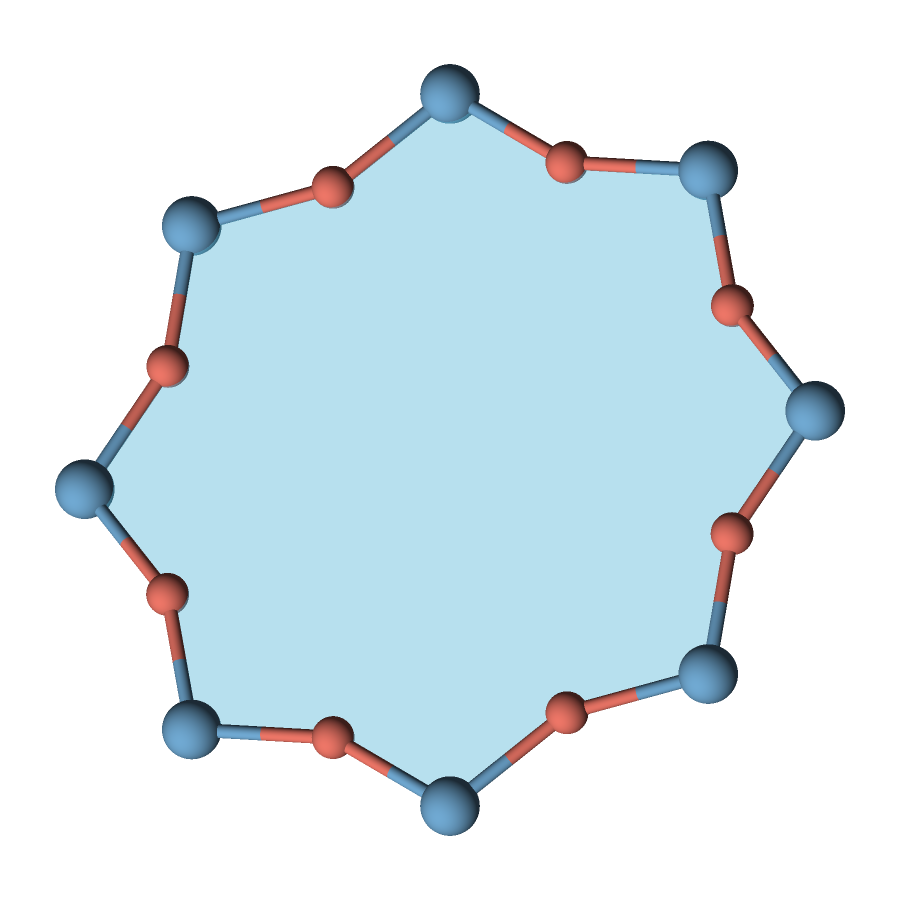
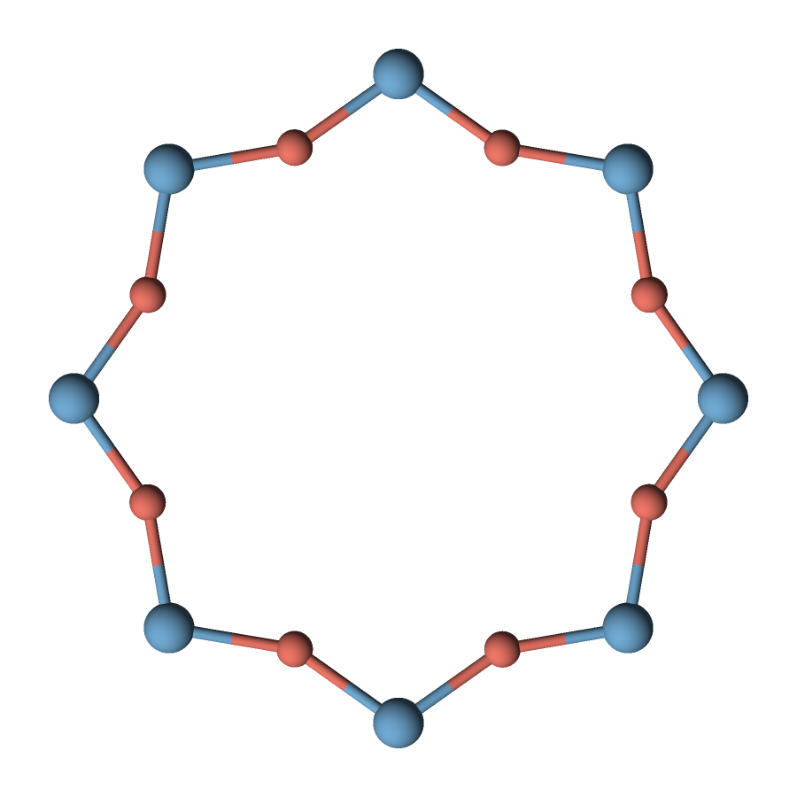
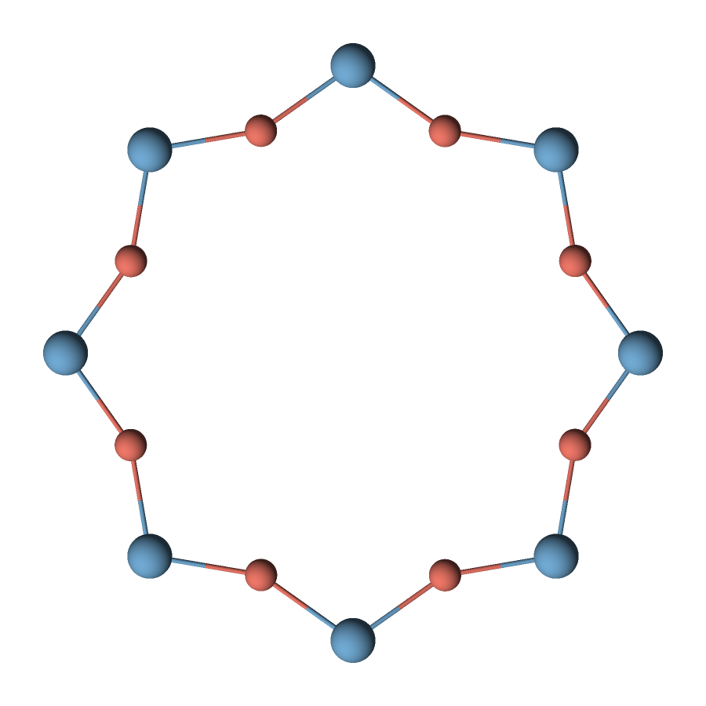
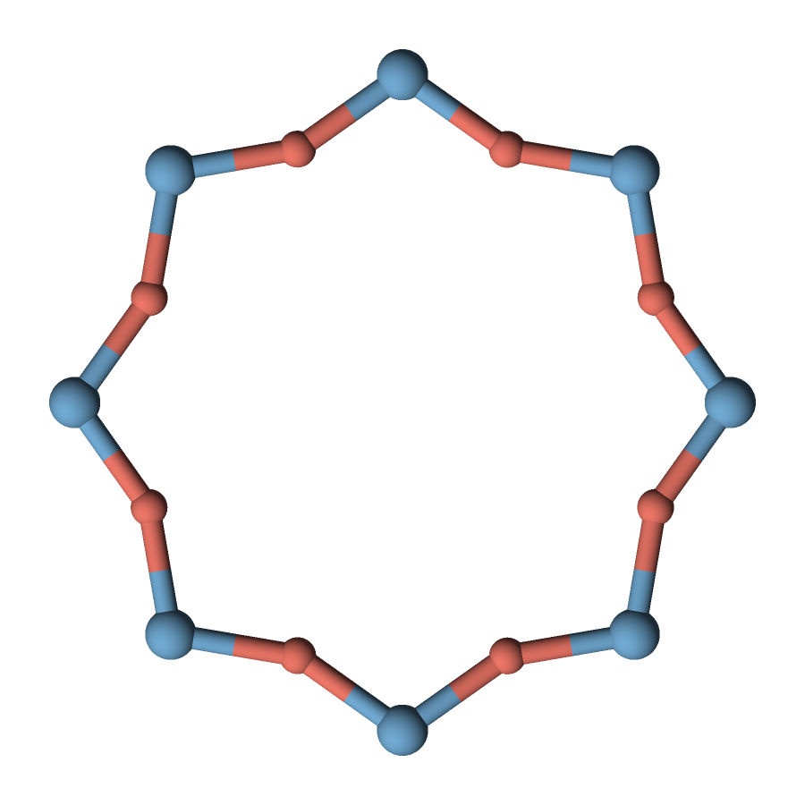
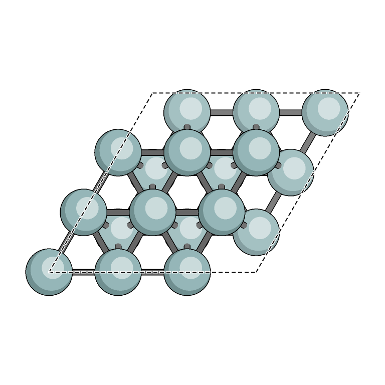

Polygon faces on a complete cage
A complete LTA alpha cage with translucent faces spanning both Si and O atoms.
qasr examples/cage.xyz --no-user-config --config examples/zeolite-faces.json -o zeolite-faces.pngFIND THE CONTROL YOU NEED
Choose what to draw, how it looks, and how to save it. Browse every command-line control, then open an option for its values, default and a practical example.
Build or install qasr and place it on your PATH, or replace qasr below with build-release/qasr. Extract the example kit into examples/ and run from its parent directory. The examples skip personal preferences for reproducibility. Explicit command-line flags override a JSON recipe.
These are actual renders from the downloadable inputs and recipes. Each recipe fixes the palette, camera and dimensions shown.
A complete LTA alpha cage with translucent faces spanning both Si and O atoms.
qasr examples/cage.xyz --no-user-config --config examples/zeolite-faces.json -o zeolite-faces.png
A single ordered ring is enough to define a tile; no closed cage is required.
qasr examples/ring.xyz --no-user-config --config examples/single-polygon.json -o single-polygon.png



Zeolite geometry is derived from the cited IZA LTA framework. Download the example kit to get all files together. The periodic-cell examples show connections to included neighboring cells.
All options are listed below.
No options match. Try a shorter term or choose all topics.
--formatChoose the input readerNormally QASR detects the format from the file contents. Choose a reader explicitly when you want to constrain detection.
Values & default: auto (default), poscar, contcar, outcar, xml, xyz, extxyz, gaussian-input, gaussian-output, ams
qasr examples/ring.xyz --no-user-config --format xyz --cell off -o structure.pngXML requires an XML-enabled build. CIF files must first be converted to a supported format.
Link to this option--frameSelect a geometry frameChoose the final geometry or a particular ionic snapshot. Frame 0 is the first snapshot; a single-frame input accepts only 0 or final.
Values & default: final (default), or a zero-based integer
qasr examples/OUTCAR.relax --no-user-config --frame 0 --view top -o structure.png--recoverRead a complete snapshot from an unfinished OUTCARPermit an unfinished OUTCAR when it contains a complete usable snapshot. A warning records recovery; malformed coordinates are still errors.
Values & default: Off by default; no value after the flag
qasr examples/OUTCAR.relax --no-user-config --recover --frame final -o structure.png--speciesSupply missing element identitiesProvide species for an older POSCAR without an element-symbol row. Explicit identities must agree with any identities already in the input.
Values & default: Comma-separated symbols in source population order
qasr examples/POSCAR.skew --no-user-config --species Si,O -o structure.png--inspectCheck the input without renderingPrint normalized geometry, selected frame, cell vectors, periodic axes and effective settings as JSON.
Values & default: No output image required
qasr examples/POSCAR.skew --no-user-config --inspect--inspect-sceneInspect the displayed atoms and bondsPrint atom instances, complete bonds, cell edges and the fitted camera. Useful for checking expansion and connectivity.
Values & default: No output image required
qasr examples/CONTCAR.co --no-user-config --expand-xy 1,1 --inspect-scene--build-infoCheck compiled capabilitiesReport the program version and features such as OpenMP, XML, JPEG, WebP and polygon faces.
Values & default: Run alone
qasr --build-info--helpSee the command-line synopsisPrint the supported command-line syntax for your executable.
Values & default: Run alone
qasr --help--versionCheck the installed version--styleChoose a drawing styleUse lighting for depth, flat illustrated contours, ORTEP spherical arcs, or BALSAC-inspired highlights. A style flag does not load a preset palette or camera.
Values & default: shaded (default), illustrated, ortep, balsac
qasr examples/CONTCAR.co --no-user-config --config examples/illustrated.json --style illustrated -o structure.png--toneUse monochrome or two-color stipplingApply a shared black/white or navy/gold dithered palette to ORTEP or BALSAC spheres.
Values & default: color (default), monocolor, dualtone
qasr examples/CONTCAR.co --no-user-config --style ortep --tone dualtone --cell off -o structure.pngChoose ortep or balsac when using a non-color tone.
Link to this option--viewAim the cameraSet the direction toward the camera. Top looks along the actual a × b surface normal and aligns a with image right.
Values & default: 1,1,1 (default), top, or X,Y,Z
qasr examples/CONTCAR.co --no-user-config --config examples/illustrated.json --view top -o structure.pngTop requires independent a/b cell vectors. Use a numeric direction for a cell-free molecule.
Link to this option--upRotate the image in its planeChoose the world direction that projects toward the top of the image. It must not be parallel to the viewing direction.
Values & default: 0,0,1 by default; top view chooses a-based alignment unless overridden
qasr examples/CONTCAR.co --no-user-config --view 0,0,1 --up 0,1,0 -o structure.png--width / --heightSet output dimensionsSet the pixel dimensions of the final image. More pixels retain detail for export or printing, at the cost of more work and memory.
Values & default: 1–16384 pixels per dimension; default 512 × 512
qasr examples/CONTCAR.co --no-user-config --width 1200 --height 900 -o structure.pngThe total-pixel and memory budgets can reject otherwise valid dimensions.
Link to this option--backgroundChoose a background or transparencySet canvas color and opacity. An alpha suffix of 00 makes the background fully transparent; ff is opaque.
Values & default: #RRGGBB or #RRGGBBAA; default opaque white
qasr examples/CONTCAR.co --no-user-config --background '#ffffff00' -o structure.pngQuote color strings in a shell. JPEG requires an opaque result.
Link to this option--aaSmooth image edgesChoose the sampling quality. Native is useful for previews; 2× and 4× take more samples. Adaptive selectively refines supported geometry.
Values & default: native, 2x (default), 4x, adaptive
qasr examples/CONTCAR.co --no-user-config --width 768 --height 768 --aa 4x -o structure.pngSome styles and scene features use full 2× sampling in adaptive mode.
Link to this option--outline-widthSet atom and bond ink widthAdjust illustrated, ORTEP and BALSAC contours. Zero removes the contours and ORTEP arcs.
Values & default: 0–8 output pixels; default 1
qasr examples/CONTCAR.co --no-user-config --config examples/illustrated.json --outline-width 1.5 -o structure.png--backendChoose the rendering backendThe Z-buffer resolves intersecting surfaces and supports the full drawing interface. Cairo is an optional experimental painter with depth and feature limitations.
Values & default: zbuffer (default), cairo
qasr examples/CONTCAR.co --no-user-config --backend zbuffer -o structure.pngCairo requires a special build and does not support every style, polygon faces, annotations or multiple render threads.
Link to this option--repeatRepeat a periodic cellRepeat the structure in the positive lattice-vector directions. Every bond requires both endpoint atoms in the displayed cells.
Values & default: NX,NY,NZ, each 1–1024; default 1,1,1
qasr examples/CONTCAR.co --no-user-config --repeat 2,2,1 --view top -o structure.pngOnly periodic axes can repeat. Reset centered expansion before using an ordinary repeat.
Link to this option--expand-xyAdd neighbors around the primary cellAdd this many neighboring cells on each side along a and b. A value of 1,1 gives a centered 3 × 3 patch. Bonds to included neighbors remain connected.
Values & default: NX,NY, each 0–511; default 0,0
qasr examples/CONTCAR.co --no-user-config --config examples/illustrated.json --expand-xy 1,1 -o structure.pngBonds stop at the outer displayed boundary. Centered expansion and nontrivial ordinary repetition are mutually exclusive.
Link to this option--image-colorsDistinguish periodic neighborsKeep the primary cell in its element palette and choose how neighboring atom copies are colored. Geometry and atom opacity are preserved.
Values & default: normal, muted, greyscale; centered expansion defaults to muted
qasr examples/CONTCAR.co --no-user-config --config examples/illustrated.json --expand-xy 1,1 --image-colors greyscale -o structure.png--sphere-scaleScale every atom radiusMultiply the display radii of all atoms. Smaller spheres reveal bonds and polygon faces without moving atoms or changing connectivity.
Values & default: Positive multiplier; default 1
qasr examples/ring.xyz --no-user-config --sphere-scale 0.45 --bond-colors atoms --cell off -o structure.png--bond-radiusSet bond thicknessSet the radius of the bond cylinders. Their diameter is twice this value. Display thickness does not change which atoms are connected.
Values & default: Positive radius in Å; default 0.12
qasr examples/ring.xyz --no-user-config --bond-radius 0.075 --bond-colors atoms --cell off -o structure.png--bond-colorsColor both halves from their atomsWith atoms, the first half takes one endpoint atom’s color and the second half takes the other. The halves meet at the midpoint.
Values & default: uniform (default), atoms
qasr examples/ring.xyz --no-user-config --config examples/ring-bonds.json --bond-colors atoms -o structure.png--facesFill a polygon or zeolite tileLoad an ordered polygon boundary from explicit vertices or zero-based atom indices. A single face is sufficient; a complete cage is optional. Alpha in the face color controls translucency.
Values & default: Path to a polygon-face JSON file
qasr examples/cage.xyz --no-user-config --config examples/zeolite-faces.json --faces examples/tiles.json -o structure.pngFor visible oxygen atoms, include the bridging O positions in the polygon loop. CIF input requires conversion first.
Link to this option--cellShow the unit-cell edgesDraw depth-tested cell edges. Hiding them also removes cell and vacuum extents from auto-framing.
Values & default: on (default), off
qasr examples/CONTCAR.co --no-user-config --view top --cell off -o structure.png--cell-widthSet unit-cell stroke thicknessChange the width of the inner cell line independently of atom and bond outlines.
Values & default: Greater than 0, up to 32 output pixels; default 2
qasr examples/CONTCAR.co --no-user-config --view top --cell-width 3 -o structure.png--cell-styleUse dashed unit-cell edgesChoose a continuous or dashed stroke for the cell boundary.
Values & default: solid (default), dashed
qasr examples/CONTCAR.co --no-user-config --config examples/cell-contour.json --cell-style dashed -o structure.png--cell-colorChoose the cell stroke colorSet the inner unit-cell line color and opacity. Use black with a white contour for contrast over colored atoms.
Values & default: #RRGGBB or #RRGGBBAA; default #464646
qasr examples/CONTCAR.co --no-user-config --view top --cell-color '#000000' --cell-outline-width 1.5 -o structure.png--cell-outline-widthAdd a white contourSurround the inner cell stroke with white. It follows dash segments and their ends; zero disables it.
Values & default: 0–8 output pixels per side; default 0
qasr examples/CONTCAR.co --no-user-config --config examples/cell-contour.json --cell-outline-width 1.5 -o structure.png--cell-dash-length / --cell-dash-gapAdjust the dash patternSet the length of each dash and the blank space between dashes. These settings apply to dashed cell lines.
Values & default: 1–256 output pixels; default length 8, gap 5
qasr examples/CONTCAR.co --no-user-config --view top --cell-style dashed --cell-dash-length 12 --cell-dash-gap 6 -o structure.png--labelsLabel visible atomsDisplay element symbols or zero-based rendered-instance indices. Collision filtering suppresses labels that would overlap or lie behind surfaces.
Values & default: none (default), element, index
qasr examples/CONTCAR.co --no-user-config --config examples/illustrated.json --labels element -o structure.png--legendShow element colors and countsAdd a legend that counts all displayed atom instances, including repeated and hidden atoms.
Values & default: off (default), on
qasr examples/CONTCAR.co --no-user-config --config examples/illustrated.json --legend on -o structure.png--axesAdd Cartesian axesProject the Cartesian X, Y and Z directions into the image. These are world axes, rather than lattice a, b and c.
Values & default: off (default), on
qasr examples/CONTCAR.co --no-user-config --view top --axes on -o structure.png--scale-barShow physical scaleAdd a fitted bar labeled in angstroms, based on the final camera scale.
Values & default: off (default), on
qasr examples/CONTCAR.co --no-user-config --config examples/illustrated.json --scale-bar on -o structure.png--output / -oWrite a PNG, JPEG or WebP imageThe filename extension selects the image format. PNG is always supported; JPEG and lossless WebP require optional build capabilities.
Values & default: Local destination path; no default image path
qasr examples/CONTCAR.co --no-user-config --view top -o cobalt.pngJPEG needs opaque pixels. Images cannot be written to stdout.
Link to this option--png-encoderChoose the PNG encoderSelect an encoder supported by your build. Libdeflate and libpng preserve image pixels; the experimental Cairo encoder has transparent-RGB limitations.
Values & default: libdeflate when available, otherwise libpng; optional cairo
qasr examples/CONTCAR.co --no-user-config --png-encoder libpng --png-compression 6 -o structure.png--png-compressionBalance PNG size and write timeChoose lossless compression effort. Auto selects an encoding level for the destination filesystem. Start at 1 for compact output with modest encoding effort.
Values & default: auto (default), or integer 0–9
qasr examples/CONTCAR.co --no-user-config --png-compression 1 -o structure.png--png-filterChoose the PNG row filterControl the scanline filter before compression. It changes encoding effort and size, while libpng/libdeflate preserve the decoded pixels.
Values & default: none, sub, up, adaptive; default depends on encoder
qasr examples/CONTCAR.co --no-user-config --png-encoder libpng --png-filter adaptive --png-compression 6 -o structure.png--configReuse a JSON recipeLoad rendering settings, then override selected fields with explicit command-line flags. Objects merge by field and arrays replace.
Values & default: One JSON path, or - for stdin
qasr examples/CONTCAR.co --no-user-config --config examples/illustrated.json --width 1000 -o structure.png--no-user-configStart from reproducible built-in defaultsSkip automatically discovered personal preferences for this invocation. Explicit recipes and command-line options still apply.
Values & default: No value after the flag
qasr examples/CONTCAR.co --no-user-config --view top -o structure.png--init-configCreate personal preferencesCreate a starter config in your user configuration directory. Edit it to set the defaults you use most often.
Values & default: Run alone; refuses to overwrite an existing file
qasr --init-configUses an absolute XDG_CONFIG_HOME, otherwise HOME/.config. Never copy a complete machine-specific invocation into this preferences file.
Link to this option--dump-configSee settings and where they came fromPrint resolved configuration, runtime settings and per-field provenance. Useful when a personal default, recipe and CLI flag interact.
Values & default: No image required
qasr --no-user-config --config examples/illustrated.json --dump-config--validate-configCheck a recipe before renderingValidate combined settings, selectors and build requirements without writing an image. Include an input to check atom indices and element identities.
Values & default: Input path optional unless the settings need input identity
qasr examples/CONTCAR.co --no-user-config --config examples/source-highlight.json --validate-config--schemaGet machine-readable JSON rulesPrint a Draft 2020-12 schema for settings, preferences, invocations, batch requests or polygon-face files.
Values & default: config (default), user, job, worker, faces; run alone
qasr --schema config--jobBundle input, output and settingsLoad a complete invocation containing paths and embedded rendering settings. Paths in a job file resolve relative to that file.
Values & default: JSON path, or - for stdin; exclusive with --config
qasr --job examples/highlight-job.json--reportSave a reproducibility recordWrite a successful render’s settings, counts, input/output hashes and stage timings. It complements the image with a compact record.
Values & default: JSON path, or - for stdout
qasr examples/CONTCAR.co --no-user-config --view top --report render-report.json -o structure.png--json-errorsReturn structured error detailsFormat failures as JSON on stderr with an error code, exit status, message and setting path where available.
Values & default: No value after the flag
qasr examples/POSCAR.skew --no-user-config --json-errors --validate-config--Use a filename beginning with a dashEnd option parsing so the next positional token can be a literal input path beginning with a dash.
Values & default: Put rendering options before the terminator
qasr --no-user-config -o structure.png -- -structure.vaspReplace -structure.vasp with your filename; the other examples use files from the example kit.
Link to this option--threadsChoose CPU parallelismChoose render threads. Auto uses one for small images and up to eight for images at least 512 × 512, subject to environment limits.
Values & default: auto (default), or 1–256
qasr examples/CONTCAR.co --no-user-config --threads 4 --width 768 --height 768 -o structure.pngMultiple threads require OpenMP. Divide CPUs between processes when launching several workers.
Link to this option--benchmark-stagesMeasure the rendering stepsWrite configuration, parse, scene, rendering and encoding timings to stderr. Repeat a comparable job to distinguish sustained behavior from one-off variation.
Values & default: No value after the flag
qasr examples/CONTCAR.co --no-user-config --benchmark-stages --threads 4 --width 768 --height 768 -o structure.png--batchRender several requests in one processProcess render, validate, stats and clear_cache requests sequentially. Retain input and scenes within the cache budget; each render can use CPU threads.
Values & default: First argument; read JSONL from stdin
cd examples
qasr --batch < worker-requests.jsonlStart in the directory containing the supplied inputs. Batch workers skip implicit personal preferences.
Link to this option--cache-mibBound retained batch dataSet the input/scene cache budget. Zero disables retention. This is a cache limit rather than a cap on all process memory.
Values & default: 0–512 MiB; default 64; batch only
cd examples
qasr --batch --cache-mib 128 < worker-requests.jsonl--max-jobsStop a batch after a chosen countExit after this many nonblank requests. Useful when supervising or periodically replacing a worker.
Values & default: 1–1000000; default reads until end of input; batch only
cd examples
qasr --batch --max-jobs 3 < worker-requests.jsonl--movieMake a camera orbit or reaction movieStream rendered frames directly into an MP4. Orbit moves the camera around one structure; trajectory plays all snapshots with fixed framing.
Values & default: orbit, trajectory; no movie by default
qasr examples/cage.xyz --no-user-config --movie orbit --movie-frames 60 --movie-fps 24 --cell off -o orbit.mp4Requires ENABLE_FFMPEG=ON. Use even image dimensions and an opaque background. See the movie guide for input and codec requirements.
Link to this option--movie-fpsSet movie playback speedChoose how many encoded frames play per second. This sets visual playback speed without assuming a physical simulation time step.
Values & default: Integer 1–120; default 30
qasr examples/reaction.xyz --no-user-config --movie trajectory --movie-fps 24 --config examples/reaction.json -o reaction.mp4Requires a build with FFmpeg support.
Link to this option--movie-framesChoose the length of an orbitSet the number of camera poses. At 24 fps, 120 frames play for five seconds. Full turns avoid duplicating the first pose at the end.
Values & default: 2–100000; default 120; orbit only
qasr examples/cage.xyz --no-user-config --movie orbit --movie-frames 120 --movie-fps 24 --cell off -o orbit.mp4Requires a build with FFmpeg support.
Link to this option--movie-axisChoose the world axis of rotationOrbit around a world Cartesian axis through the displayed structure center. View, up and right rotate together without a pole flip.
Values & default: Nonzero X,Y,Z; default 0,0,1; orbit only
qasr examples/cage.xyz --no-user-config --movie orbit --movie-axis 0,1,0 --movie-frames 60 --cell off -o orbit.mp4Requires a build with FFmpeg support.
Link to this option--movie-angleSet the orbit angle and directionChoose a full revolution or a partial arc. Negative angles reverse direction. Partial arcs include both endpoint views.
Values & default: Nonzero −3600 to 3600 degrees; default 360; orbit only
qasr examples/cage.xyz --no-user-config --movie orbit --movie-angle 180 --movie-frames 60 --cell off -o orbit.mp4Requires a build with FFmpeg support.
Link to this option--movie-interpolateSmooth a supplied reaction pathInsert linearly interpolated Cartesian positions and cell vectors between source snapshots. The fixed camera fits every displayed pose.
Values & default: 0–1000 inserted geometries per interval; default 0; trajectory only
qasr examples/reaction.xyz --no-user-config --movie trajectory --movie-interpolate 3 --config examples/reaction.json -o reaction.mp4Requires FFmpeg support. This smooths a supplied path; it does not calculate a reaction, infer atom mapping or unwrap periodic positions.
Link to this option--movie-codecSelect the MP4 encoderAuto prefers FFmpeg’s libx264 H.264 encoder and otherwise uses native MPEG-4 Part 2. An explicit encoder must be available in the linked libraries.
Values & default: auto (default), h264, mpeg4
qasr examples/cage.xyz --no-user-config --movie orbit --movie-codec mpeg4 --movie-frames 60 --cell off -o orbit.mp4Requires FFmpeg support. YUV 4:2:0 MP4 output uses no alpha channel and is not lossless RGB.
Link to this optionA recipe is an object with sections such as image, camera and geometry. The table lists every top-level rendering setting and its nested fields. Open the linked option for its explanation; JSON-only controls include layer fading, framing margins, element palettes, bond cutoffs and individual atom styles.
Use qasr --schema config for complete structural limits and --validate-config for input-dependent checks. Runtime paths, frame selection and threads belong in a job, rather than a rendering recipe. Read the configuration guide →
| JSON setting | Purpose | Example value |
|---|---|---|
schema_version | Settings format version; omit or use 1. | 1 |
$schema | Optional JSON Schema URL for editor assistance. | "https://ifilot.github.io/qasr/schemas/config.schema.json" |
image.width | Set the pixel dimensions of the final image. More pixels retain detail for export or printing, at the cost of more work and memory. --width example → | 512 |
image.height | Set the pixel dimensions of the final image. More pixels retain detail for export or printing, at the cost of more work and memory. --height example → | 512 |
image.background | Set canvas color and opacity. An alpha suffix of 00 makes the background fully transparent; ff is opaque. --background example → | "#ffffff" |
image.style | Use lighting for depth, flat illustrated contours, ORTEP spherical arcs, or BALSAC-inspired highlights. A style flag does not load a preset palette or camera. --style example → | "shaded" |
image.tone | Apply a shared black/white or navy/gold dithered palette to ORTEP or BALSAC spheres. --tone example → | "color" |
image.aa | Choose the sampling quality. Native is useful for previews; 2× and 4× take more samples. Adaptive selectively refines supported geometry. --aa example → | "2x" |
image.backend | The Z-buffer resolves intersecting surfaces and supports the full drawing interface. Cairo is an optional experimental painter with depth and feature limitations. --backend example → | "zbuffer" |
image.depth_fade | Fade deeper illustrated layers toward white, from 0 to 1. | 0.6 |
image.outline_width | Adjust illustrated, ORTEP and BALSAC contours. Zero removes the contours and ORTEP arcs. --outline-width example → | 1 |
image.png_encoder | Select an encoder supported by your build. Libdeflate and libpng preserve image pixels; the experimental Cairo encoder has transparent-RGB limitations. --png-encoder example → | "libdeflate" |
image.png_filter | Control the scanline filter before compression. It changes encoding effort and size, while libpng/libdeflate preserve the decoded pixels. --png-filter example → | "none" |
image.png_compression | Choose lossless compression effort. Auto selects an encoding level for the destination filesystem. Start at 1 for compact output with modest encoding effort. --png-compression example → | "auto" |
camera.projection | Projection model; orthographic is the supported value. | "orthographic" |
camera.view | Set the direction toward the camera. Top looks along the actual a × b surface normal and aligns a with image right. --view example → | [1,1,1] |
camera.up | Choose the world direction that projects toward the top of the image. It must not be parallel to the viewing direction. --up example → | [0,1,0] |
camera.margin | Fractional fitting space on each side; at least 0 and less than 0.5. | 0.06 |
geometry.repeat | Repeat the structure in the positive lattice-vector directions. Every bond requires both endpoint atoms in the displayed cells. --repeat example → | [1,1,1] |
geometry.expand_xy | Add this many neighboring cells on each side along a and b. A value of 1,1 gives a centered 3 × 3 patch. Bonds to included neighbors remain connected. --expand-xy example → | [0,0] |
geometry.image_colors | Keep the primary cell in its element palette and choose how neighboring atom copies are colored. Geometry and atom opacity are preserved. --image-colors example → | "normal" |
geometry.sphere_scale | Multiply the display radii of all atoms. Smaller spheres reveal bonds and polygon faces without moving atoms or changing connectivity. --sphere-scale example → | 1 |
geometry.bond_radius_A | Set the radius of the bond cylinders. Their diameter is twice this value. Display thickness does not change which atoms are connected. --bond-radius example → | 0.12 |
geometry.bond_colors | With atoms, the first half takes one endpoint atom’s color and the second half takes the other. The halves meet at the midpoint. --bond-colors example → | "uniform" |
elements | Map element symbols to display color and/or radius_A. Unspecified elements use built-in styles. | {"Si":{"color":"#70a9d2","radius_A":0.32}} |
bond_cutoffs_A | Map element pairs to connectivity cutoffs in Å. This sets connectivity, independently of cylinder radius. | {"Si-O":1.9} |
overlays.cell | Draw depth-tested cell edges. Hiding them also removes cell and vacuum extents from auto-framing. --cell example → | true |
overlays.cell_width | Change the width of the inner cell line independently of atom and bond outlines. --cell-width example → | 2 |
overlays.labels | Display element symbols or zero-based rendered-instance indices. Collision filtering suppresses labels that would overlap or lie behind surfaces. --labels example → | "none" |
overlays.axes | Project the Cartesian X, Y and Z directions into the image. These are world axes, rather than lattice a, b and c. --axes example → | false |
overlays.legend | Add a legend that counts all displayed atom instances, including repeated and hidden atoms. --legend example → | false |
overlays.scale_bar | Add a fitted bar labeled in angstroms, based on the final camera scale. --scale-bar example → | false |
overlays.cell_style | Choose a continuous or dashed stroke for the cell boundary. --cell-style example → | "solid" |
overlays.cell_color | Set the inner unit-cell line color and opacity. Use black with a white contour for contrast over colored atoms. --cell-color example → | "#464646" |
overlays.cell_outline_width | Surround the inner cell stroke with white. It follows dash segments and their ends; zero disables it. --cell-outline-width example → | 0 |
overlays.cell_dash_length | Set the length of each dash and the blank space between dashes. These settings apply to dashed cell lines. --cell-dash-length example → | 8 |
overlays.cell_dash_gap | Set the length of each dash and the blank space between dashes. These settings apply to dashed cell lines. --cell-dash-gap example → | 5 |
species | Supply ordered element symbols for otherwise unlabeled input species. | ["Si","O"] |
atom_overrides | Apply ordered source-index, element and optional cell-specific display overrides. Indices are zero-based. | [{"select":{"source_indices":[6]},"color":"#ee6633","radius_A":0.95}] |
faces | Embed polygon faces directly in a recipe; see the face-field reference below. | [{"vertices":[[0,0,0],[3,0,0],[0,3,0]],"color":"#54b6d880"}] |
faces_file | Load faces from a separate JSON file, relative to the recipe file. | "tiles.json" |
elements.<symbol>.color | Set an element display color, including optional alpha. | "#70a9d2" |
elements.<symbol>.radius_A | Set an element display radius in Å, before sphere scaling. | 0.32 |
atom_overrides[].select.element | Match a source element; combines with other selector criteria. | "Si" |
atom_overrides[].select.source_indices | Match specific zero-based source atom indices. | [6,34] |
atom_overrides[].select.source_range | Match an inclusive zero-based source-index range. | [0,9] |
atom_overrides[].select.cell | Limit an override to a specific displayed lattice origin. | [1,0,0] |
atom_overrides[].color | Replace the matched atom color; later rules take precedence. | "#ee6633" |
atom_overrides[].radius_A | Replace the matched atom display radius in Å. | 0.95 |
{
"image": {
"style": "illustrated",
"depth_fade": 0.6
},
"camera": {
"view": [
0,
0,
1
],
"up": [
0,
1,
0
],
"margin": 0.08
},
"elements": {
"Si": {
"color": "#70a9d2",
"radius_A": 0.32
},
"O": {
"color": "#ed7667",
"radius_A": 0.23
}
},
"bond_cutoffs_A": {
"Si-O": 1.9
},
"geometry": {
"bond_radius_A": 0.075,
"bond_colors": "atoms"
}
}Save as my-style.json, then run qasr examples/ring.xyz --config my-style.json -o ring.png. Colors and display radii affect appearance; pair cutoffs determine connectivity. This cell-free ring uses an explicit view and up direction.
Use a JSON object with a faces array. Each entry describes one ordered boundary using either explicit vertices or atom indices. Both directions around the boundary are accepted. Include oxygen vertices when the displayed Si–O ring needs to follow its actual boundary.
| Face field | Meaning |
|---|---|
vertices | Ordered 3D points forming a face boundary; 3–64 vertices. Do not repeat the first point at the end. |
coordinates | cartesian (default) uses Å; fractional uses the full cell basis. Applies to explicit vertices. |
atom_indices | An ordered loop of 3–64 zero-based source atom indices; use this instead of vertices to follow atoms. |
cell_offsets | One integer lattice offset per atom index; omitted offsets are zero. Nonzero offsets require a periodic axis. Uses wrapped primary-cell atom positions. |
color | Fill color #RRGGBB[AA]; default #43a6cf80. The alpha suffix sets translucency. |
outline_color | Boundary color #RRGGBB[AA]; default #23556e. |
outline_width | Inset boundary width in output pixels, 0–8; default 0 removes the outline. |
repeat | true (default) translates whole faces with repeat/expansion; false draws a face once. |
{
"schema_version": 1,
"faces": [
{
"atom_indices": [
0,
8,
1,
9,
2,
10,
3,
11,
4,
12,
5,
13,
6,
14,
7,
15
],
"repeat": false,
"color": "#54b6d86c",
"outline_width": 0.8,
"outline_color": "#257895"
}
]
}Save this face file next to ring.xyz. Use the single-polygon recipe for the exact translucent example above. Face-field constraints can be inspected in the face schema.
Explicit Cartesian vertices are in angstroms and are not wrapped. Fractional vertices require all three cell vectors. Atom indices refer to the full, zero-based source list printed by --inspect for the selected frame. Atom-based vertices use wrapped primary-cell positions plus their cell_offsets; give one offset for every index when a ring crosses a cell boundary.
{"faces":[{"atom_indices":[0,3,7,4],"cell_offsets":[[0,0,0],[1,0,0],[1,0,0],[0,0,0]],"color":"#54b6d880"}]}This illustrates offset syntax; use indices that exist in your input. Faces translate as complete polygons during repetition. They are not inferred, clipped to the cell, or recolored as periodic atom copies. Include the surrounding atom copies that your intended boundary needs. CIF must first be converted to a supported geometry format.
Simple concave loops are supported. Nonplanar loops become a piecewise planar surface through the original 3D vertices; degenerate or self-intersecting projected loops fail. Split a folded shape into separate faces. Fill and outline colors are independent of the atom style and tone.
Faces render on both sides and blend in sample-depth order with one another and the nearest atom/bond surface. This does not provide transparent-atom volume rendering. Opaque faces hide label anchors; translucent faces allow labels. Internal triangulation edges do not create outlines or double-alpha seams.
Use --faces FILE, root-level faces: [...], or root-level faces_file: "polygons.json". A single configuration layer cannot contain both face forms. Relative paths resolve against the containing config/job file, or the working directory for stdin/worker requests. Higher layers replace the array; an empty array clears it; CLI faces are the final override. Personal defaults cannot store faces.
Dumps contain inline definitions. Workers reload referenced face files and invalidate scene caches when those definitions change. --inspect-scene exposes face vertices, origins and boundary flags. To check atom indices and triangulation without writing an image, supply your input with --validate-config.
Face JSON is limited to 1 MiB and 32 nesting levels: at most 4096 faces, 3–64 vertices per face, 65536 input vertices, 262144 expanded triangles, 64 overlapping face layers per sample and 200 million tile/sample candidates. Allocations share the renderer’s 1 GiB allocation budget. Unknown/duplicate fields and nonfinite numbers fail explicitly.
Faces and atom-colored bonds require the Z-buffer backend. Adaptive AA uses the full 2× grid for faces and styled cell edges; native, 2× and 4× sampling remain available. Both endpoint atoms are mandatory for every displayed bond: expansion restores connections to included neighbors, while connections beyond the outermost displayed cell are omitted.